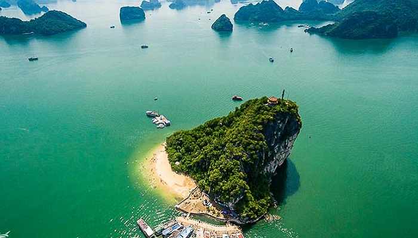
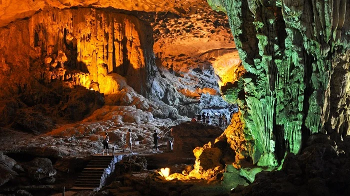

About Ha Long Bay
Ha Long Bay is famous for its emerald waters and thousands of towering limestone islands. Discover the top beautiful destinations you shouldn't miss:

Ha Long Bay
Ha Long Bay is one of the world’s most magnificent natural wonders and a top tourist attraction in Vietnam, renowned for thousands of unique limestone islands rising from its emerald green waters.

Ti Top Island
Ti Top Island is one of the most famous and beautiful islands located in the heart of Ha Long Bay, Quang Ninh Province. This island possesses a perfect combination of towering mountains and peaceful beaches, making it an unforgettable stopover for tourists on their journey to discover the natural wonder of the world.
Hon Trong Mai
In Vietnam, Hon Trong Mai (Rooster and Hen Islet) These are the names of two extremely famous landmarks located in two different localities, both uniquely shaped like a pair of roosters and hens, and associated with the symbol of faithful love.

Bai Chay Beach
Bai Chay is the most bustling tourist center of the coastal city of Ha Long, Quang Ninh province, featuring a vast artificial beach and the leading amusement and entertainment complex in Northern Vietnam.
Bai Tho Mountain
Bai Tho Mountain (Poem Mountain) is a limestone mountain standing at an elevation of about 168m to 200m right in the heart of Ha Long City, Quang Ninh Province. It is one of the city's premier cultural and historical symbols, offering a breathtaking, panoramic view of Ha Long Bay from above.

Thien Cung Cave
Thien Cung Cave is one of the most beautiful and magnificent limestone caves located in the southwest of Ha Long Bay. The cave sits on Dau Go Island at an altitude of 25 meters above sea level and is about 4 kilometers away from the tourist ferry terminal. Covering an area of nearly 10,000 square meters, Thien Cung Cave is likened to a "heavenly palace" underground, thanks to its incredibly majestic and shimmering system of stalactites and stalagmites.